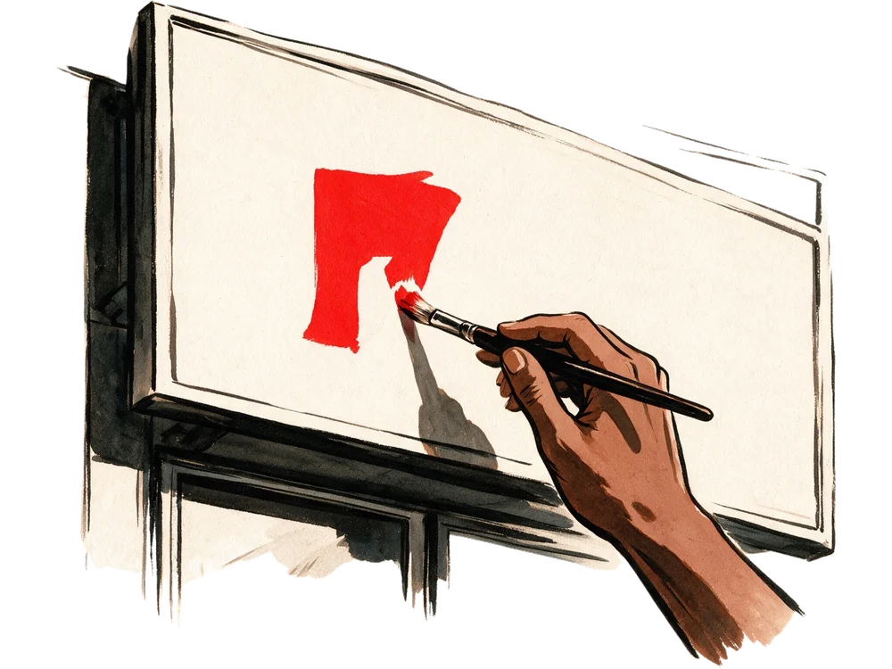
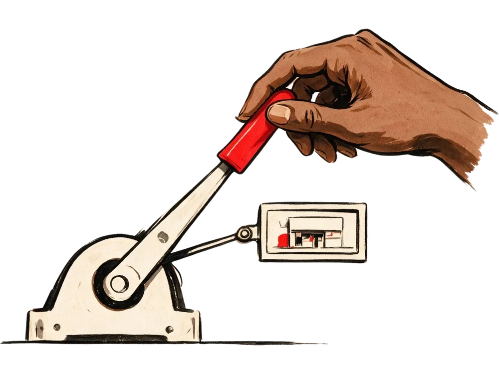

01
Content &
campaigns
Give people a reason to notice — and act.
- Content direction
- Photography
- Video
- Short-form
- Launches
- Creator collaborations


Attention Demand Revenue
STIR builds the content, strategy and systems that turn attention into demand — and demand into revenue.
01 — Attention
02 / The argument
More content isn’t the whole answer.
The interesting part is usually already there. We find it, build the story around it, and give people a reason to act.
The role STIR is Labay Market’s digital and systems operator. Since 2025.
10M+
Organic views
We didn’t invent Labay’s story. We built the system that helped more people see it.
Creator collaborations
Every one of these came in through Labay’s account, which STIR runs, and was set up by us. None of them turned up unannounced.
Kemoy Martin
1.4M followers
Nicolas Nuvan
1M followers
MarcosWorldNyc
336K followers
Eating With Experts
117K followers
Melissa Rose Cooper
Follower counts as supplied at time of publication.
The attention turned into brand partnerships — Nike, Red Bull and TurboTax came to the market.
04 / Services
Three ways in. Take one piece, take the whole build, or put someone in charge of keeping it moving.
01
Give people a reason to notice — and act.
02

Make the business look as good as it is.
03

Put someone in charge of keeping it moving.
05 / How we work
Three stages, in order. You can hire us for one of them, or for all three and the years after.
We look at the business properly — the product, the operation, the room it sits in — and find the part that is already worth attention.
We make the work that communicates it, at the standard the business deserves rather than the standard its category settles for.
We keep it in front of the right people week after week, and we watch which of it turns into customers.
06 / Who this is for
The product is good. The service is good. The operation works. What’s missing is that not enough of the right people know yet — and nothing is turning the ones who do into revenue.
Turn daily operations into content people travel for.
Short-form · Merchandising story · Foot traffic
Make the morning line the marketing.
Product film · Launch moments · Pre-orders
Give regulars a reason to post.
Identity · In-store cues · Community content
Fill the room on the nights that matter.
Campaigns · Creator seeding · Reservations
Make a business nobody photographs impossible to ignore.
Brand system · Website · Inbound pipeline
Explain a complex operation to the people who buy it.
Positioning · Capability film · Sales collateral
Turn expertise into the reason people call you first.
Authority content · Website · Intake system
Sell the block, not just the listing.
Neighborhood story · Listing media · Lead capture
Make the work visible, then make it bookable.
Proof content · Offer design · Booking flow
For markets
Turn daily operations into content people travel for.
Short-form · Merchandising story · Foot traffic
The category matters less than whether there’s something real to work with.
Not for you if
The business isn’t doing the volume yet to invest in an operator, or isn’t ready to grow the operation. We’d rather tell you that early than take the work.

There’s probably something inside your business people would care about. Tell us about it and we’ll tell you what we see — whether or not we end up working together.
01
You send it.
A few lines about the business.
02
We look at the business.
Properly. The product, the operation, the market.
03
We tell you what we see.
Free, either way.